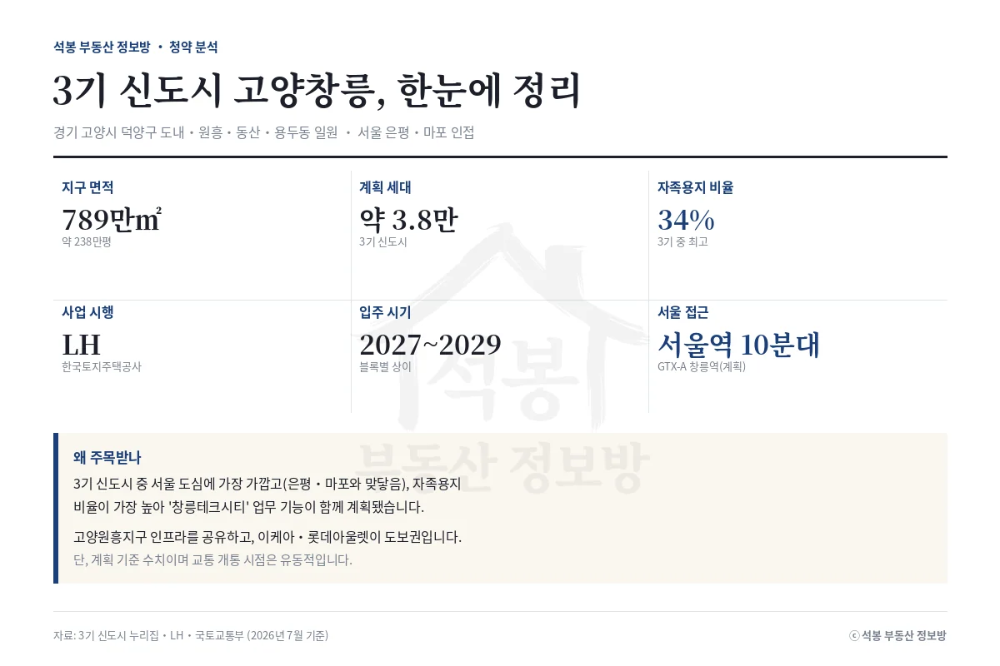
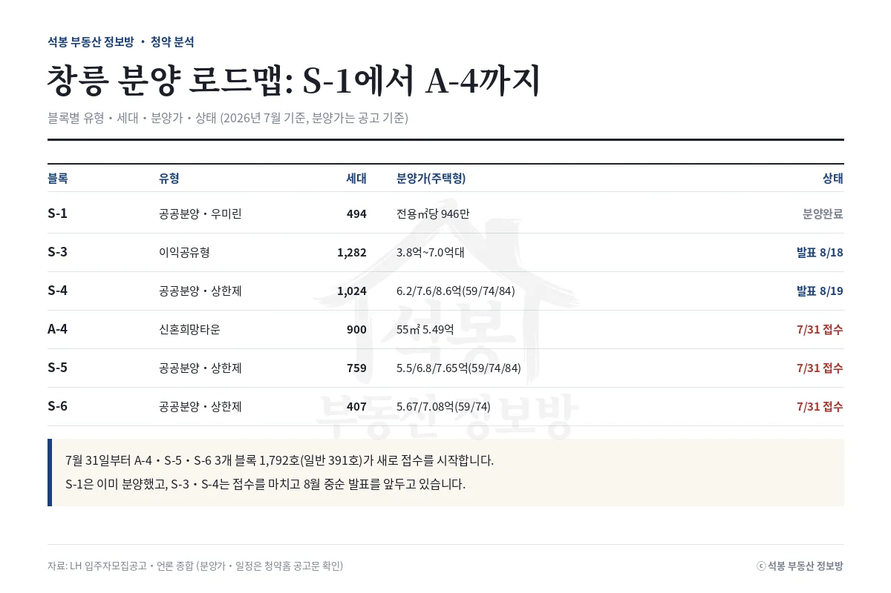
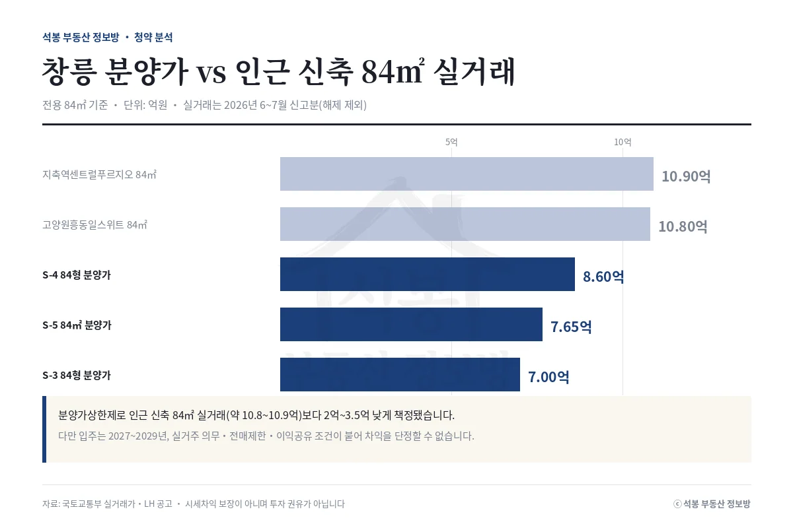
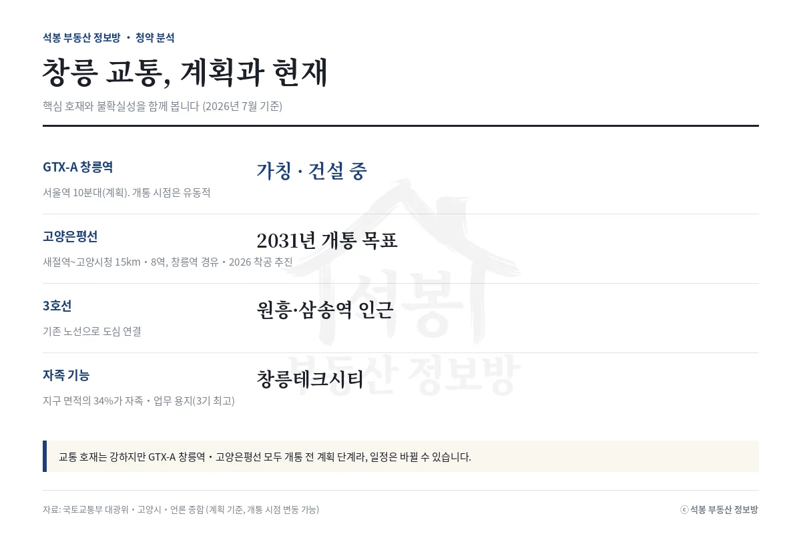
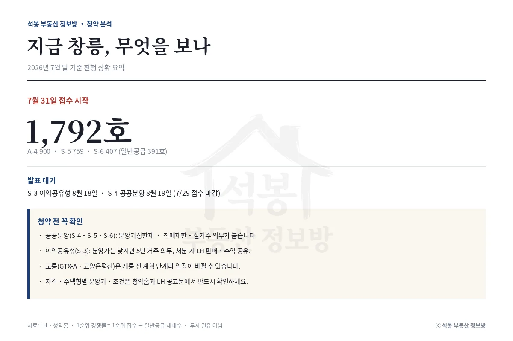

3기 신도시 고양창릉이 다시 검색어에 올랐습니다. S-3(이익공유형)과 S-4(공공분양)가 지난주 접수를 마치고 발표(8월 18~19일)를 기다리는 사이, 오늘 바로 7월 31일부터 A-4·S-5·S-6 세 블록 1,792호가 새로 접수를 시작합니다. 관심이 몰리는 지금, 창릉이 어떤 신도시인지, 블록별 분양가는 얼마인지, 교통 호재는 어디까지 믿을 수 있는지 실거래 데이터와 함께 한 번에 정리했습니다. 지도에서 위치부터 보고 싶다면 창릉 일대 실거래 지도에서 바로 확인할 수 있습니다.
지구 개요: 서울에 가장 가까운 3기 신도시
고양창릉지구는 경기 고양시 덕양구 도내·원흥·동산·용두동 일원 약 789만㎡(238만평)에 조성되는 3기 신도시입니다. 계획 세대는 약 3만 8천 세대이고, 사업시행은 LH가 맡고 있습니다. 창릉의 가장 큰 특징은 서울 접근성입니다. 은평구, 마포구와 맞닿아 있어 3기 신도시 중 서울 도심에 가장 가깝습니다. 여기에 자족용지 비율이 지구 면적의 34%로 3기 신도시 중 가장 높아, 주거만이 아니라 '창릉테크시티'라는 업무·산업 기능이 함께 설계됐습니다. 이미 조성이 끝난 고양원흥지구의 생활 인프라를 공유하고, 이케아와 롯데아울렛이 도보권에 있어 초기 입주 불편이 상대적으로 적은 편입니다. 입주는 블록에 따라 2027년부터 2029년까지 나뉩니다.
블록별 분양 로드맵: S-1에서 A-4까지

창릉은 한 번에 다 나오지 않고 블록별로 순차 분양됩니다. 흐름을 정리하면 이렇습니다.
| 블록 | 유형 | 세대 | 분양가(주택형) | 상태 |
|---|---|---|---|---|
| S-1 우미린 그레니티 | 공공분양 | 494 | 전용㎡당 946만원 | 분양 완료(6월) |
| S-3 | 이익공유형 | 1,282 | 3.8억~7.0억대 | 발표 8.18 |
| S-4 | 공공분양(상한제) | 1,024 | 6.2 / 7.6 / 8.6억 (59/74/84㎡) | 발표 8.19 |
| A-4 | 신혼희망타운 | 900 | 55㎡ 5.49억 | 7.31 접수 |
| S-5 | 공공분양(상한제) | 759 | 5.5 / 6.8 / 7.65억 (59/74/84㎡) | 7.31 접수 |
| S-6 | 공공분양(상한제) | 407 | 5.67 / 7.08억 (59/74㎡) | 7.31 접수 |
S-1 우미린 그레니티는 5월에 분양을 마쳤습니다. S-3와 S-4는 지난주(7월 27~29일) 접수를 받고 각각 8월 18일, 19일 발표를 앞두고 있습니다. 그리고 오늘 7월 31일, A-4(신혼희망타운)와 S-5, S-6 세 블록이 총 1,792호(사전청약분을 뺀 일반공급은 391호) 접수를 시작합니다. S-5는 이수건설, S-6는 반도건설, A-4는 신세계건설이 짓고, 세 블록 모두 2027년 하반기 입주 예정입니다. 유형이 갈리는 점이 중요합니다. S-4·S-5·S-6는 분양가상한제가 적용되는 공공분양이고, S-3는 초기 부담을 낮춘 이익공유형, A-4는 신혼희망타운입니다. 각 유형의 자격과 조건은 청약홈과 LH 공고문에서 반드시 확인해야 합니다.
분양가 검증: 인근 신축과 얼마나 차이 나나

분양가상한제가 적용된 만큼, 창릉 분양가는 주변 신축 실거래보다 낮게 책정됐습니다. 전용 84㎡를 기준으로 인근 신축권(도내·원흥·삼송·동산·지축·향동) 실거래와 나란히 놓으면 아래와 같습니다. 실거래는 2026년 6~7월 신고분(해제 제외)입니다.
| 구분 (전용 84㎡) | 금액 | 인근 신축 대비 |
|---|---|---|
| 지축역센트럴푸르지오 실거래 | 10.9억 | 기준 |
| 고양원흥동일스위트 실거래 | 10.8억 | 기준 |
| S-4 84형 분양가 | 8.6억 | 약 2.2억 낮음 |
| S-5 84㎡ 분양가 | 7.65억 | 약 3.2억 낮음 |
| S-3 84형 분양가 | 7.0억대 | 약 3.5억 낮음 |
숫자만 보면 인근 신축보다 2억에서 3억 넘게 저렴합니다. 이 가격 차이가 창릉에 통장이 몰리는 이유입니다. 다만 이 격차를 그대로 시세차익으로 읽는 건 성급합니다. 입주 시점이 2027년에서 2029년으로 지금 시세와 시차가 크고, 그사이 주변 시세가 어떻게 움직일지 알 수 없습니다. 공공분양에는 전매제한과 실거주 의무가 붙고, 이익공유형(S-3)은 분양가가 가장 낮은 대신 5년 거주 의무가 있으며 나중에 팔 때 개인 간 거래가 아니라 LH에 되팔고 매각 수익을 나눠 갖는 구조입니다. 낮은 분양가에는 그만큼의 조건이 따라온다는 점을 함께 봐야 합니다.
교통과 미래가치: 호재와 불확실성

창릉의 미래가치는 대부분 교통 계획에 기대고 있습니다. 핵심은 GTX-A 창릉역(가칭)입니다. 개통되면 서울역까지 10분대 진입이 가능하다고 홍보되지만, 이 역은 아직 건설 단계이고 개통 시점은 확정되지 않았습니다. 여기에 서울 6호선 새절역과 고양시청을 잇는 고양은평선(15km, 8개 역)이 창릉역을 경유해 2031년 개통을 목표로 추진되고 있습니다. 기존 노선으로는 3호선 원흥·삼송역이 인근에 있습니다. 정리하면 교통 호재 자체는 강하지만, GTX-A와 고양은평선 모두 아직 개통 전 계획 단계라 일정이 바뀔 수 있다는 점을 감안하고 판단하는 게 안전합니다. 계획대로 열린다면 서울 접근성이 크게 개선되지만, 그 시점은 지켜봐야 합니다.
정리: 지금 창릉에서 볼 것

요약하면 이렇습니다. 창릉은 서울 도심에 가장 가까운 3기 신도시이고, 분양가상한제로 인근 신축보다 낮은 가격에 나오는 물량이 순차로 공급되고 있습니다. 지난주 S-3·S-4에 이어 오늘부터 A-4·S-5·S-6 세 블록이 접수를 시작하니, 유형과 자격을 먼저 맞춰보는 게 순서입니다. 인근 시세를 눈으로 견줘보려면 실제 어떤 값에 거래되는지 확인하는 게 가장 빠릅니다. 창릉 바로 옆 대표 신축인 지축역센트럴푸르지오와 고양원흥동일스위트의 실거래를 지도에서 확인해 보세요. 발표가 나오면 1순위 경쟁률(1순위 접수 건수를 일반공급 세대수로 나눈 값)까지 저희가 데이터로 다시 정리하겠습니다. 자격과 조건, 주택형별 분양가는 청약홈과 LH 공고문에서 반드시 확인하세요.
원자료: LH 입주자모집공고, 3기 신도시 누리집, 국토교통부 실거래가 공개시스템(시세는 2026년 6~7월 신고분, 해제 제외, 전용면적당), 언론 종합(2026년 7월 기준) · 분석·제작: 석봉 부동산 정보방 · 본 자료는 정보 제공 목적이며 투자 권유가 아닙니다. 청약 자격·일정·분양가·조건은 청약홈과 LH 공고문을 반드시 확인하세요.